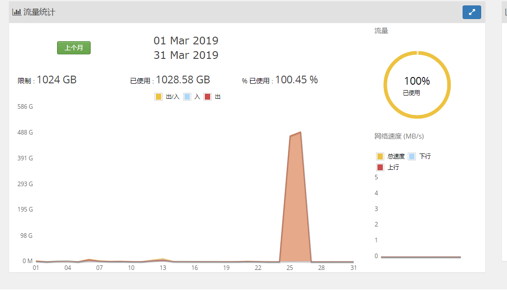

捕捉到的东西地址
https://github.com/yingshang/Legacy-of-intrusion.git
蜜罐地址
https://github.com/yingshang/honeypot.git
我发现使用docker去搞蜜罐是一种挺不错的选择，相对于说什么低交互，中交互的蜜罐系统来说，简直无敌。首先起码可以在安全性能够得到保障，假如被人逃逸了，瞬间就有CVE了。
我聊聊一下蜜罐的架构，一般来说，在整个互联网中存在太多扫描器，一部分是爆破服务，一部分是exp漏洞，那么首先我们要考虑收益的问题，也就是我要攻击者能够很快的攻击到我的蜜罐系统，进而留下攻击痕迹，让我去分析和溯源，进而建立攻击模型。
所以我选择ssh和mysql设置弱密码，让黑客进行暴力破解进来。在一个月前，我分别在不同区域设置了蜜罐系统，让我惊讶的是，在同一天我居然捕捉到相同的攻击样本。在这个过程中，外网攻击的流程一般是使用工具爆破成功后上传样本（挖矿，ddos病毒，自我复制病毒等）。
安装ssh的时候，我对源码进行一些修改，用来记录攻击者爆破的密码
Mar 29 10:57:09 85740b4003de sshd[120]: Username: root, Password: 123123 Mar 29 10:57:09 85740b4003de sshd[120]: Failed password for root from 174.138.56.93 port 45482 ssh2 Mar 29 10:57:09 85740b4003de sshd[120]: error: Received disconnect from 174.138.56.93: 11: Normal Shutdown, Thank you for playing Mar 29 10:57:23 85740b4003de sshd[121]: error: Received disconnect from 223.111.139.211: 11: Mar 29 10:57:58 85740b4003de sshd[122]: error: Received disconnect from 222.186.30.71: 11: Mar 29 10:58:49 85740b4003de sshd[123]: Invalid user ubuntu from 159.89.116.97 Mar 29 10:58:49 85740b4003de sshd[123]: input_userauth_request: invalid user ubuntu Mar 29 10:58:49 85740b4003de sshd[123]: Username: ubuntu, Password: ubuntu123 Mar 29 10:58:49 85740b4003de sshd[123]: error: Could not get shadow information for NOUSER Mar 29 10:58:49 85740b4003de sshd[123]: Failed password for invalid user ubuntu from 159.89.116.97 port 57664 ssh2 Mar 29 10:58:49 85740b4003de sshd[123]: error: Received disconnect from 159.89.116.97: 11: Normal Shutdown, Thank you for playing Mar 29 11:02:07 85740b4003de sshd[124]: Invalid user oracle from 46.105.30.20 Mar 29 11:02:07 85740b4003de sshd[124]: input_userauth_request: invalid user oracle Mar 29 11:02:07 85740b4003de sshd[124]: Username: oracle, Password: qwe@123 Mar 29 11:02:07 85740b4003de sshd[124]: error: Could not get shadow information for NOUSER Mar 29 11:02:07 85740b4003de sshd[124]: Failed password for invalid user oracle from 46.105.30.20 port 42954 ssh2 Mar 29 11:02:08 85740b4003de sshd[124]: error: Received disconnect from 46.105.30.20: 11: Normal Shutdown, Thank you for playing Mar 29 11:03:46 85740b4003de sshd[125]: Invalid user support from 103.120.226.12 Mar 29 11:03:46 85740b4003de sshd[125]: input_userauth_request: invalid user support Mar 29 11:03:46 85740b4003de sshd[125]: Username: support, Password: password Mar 29 11:03:46 85740b4003de sshd[125]: error: Could not get shadow information for NOUSER Mar 29 11:03:46 85740b4003de sshd[125]: Failed password for invalid user support from 103.120.226.12 port 48932 ssh2 Mar 29 11:03:46 85740b4003de sshd[125]: error: Received disconnect from 103.120.226.12: 11: Normal Shutdown, Thank you for playing Mar 29 11:05:17 85740b4003de sshd[126]: error: Received disconnect from 36.156.24.94: 11: Mar 29 11:06:15 85740b4003de sshd[127]: Username: root, Password: uClinux Mar 29 11:06:15 85740b4003de sshd[127]: Failed password for root from 95.189.253.93 port 59721 ssh2 Mar 29 11:06:16 85740b4003de sshd[127]: Username: root, Password: root Mar 29 11:06:16 85740b4003de sshd[127]: Failed password for root from 95.189.253.93 port 59721 ssh2 Mar 29 11:06:16 85740b4003de sshd[127]: Username: root, Password: system Mar 29 11:06:16 85740b4003de sshd[127]: Failed password for root from 95.189.253.93 port 59721 ssh2 Mar 29 11:06:16 85740b4003de sshd[127]: Username: root, Password: 123456 Mar 29 11:06:16 85740b4003de sshd[127]: Accepted password for root from 95.1
还有我在history那里埋了个点
PS1="`whoami`@`hostname`:"'[$PWD]'
history
USER_IP=`who -u am i 2>/dev/null| awk '{print $NF}'|sed -e 's/[()]//g'`
if [ "$USER_IP" = "" ]
then
USER_IP=`hostname`
fi
if [ -d /usr/operation ]
then
mkdir /usr/operation
chmod 777 /usr/operation
fi
if [ -d /usr/operation/${LOGNAME} ]
then
mkdir /usr/operation/${LOGNAME}
chmod 300 /usr/operation/${LOGNAME}
fi
export HISTSIZE=4096
DT=`date "+%Y-%m-%d_%H:%M:%S"`
if [ -d /usr/operation/${LOGNAME}/${USER_IP} ]
then
mkdir /usr/operation/${LOGNAME}/${USER_IP}
chmod 300 /usr/operation/${LOGNAME}/${USER_IP}
fi
export HISTFILE="/usr/operation/${LOGNAME}/${USER_IP}/$DT"
chmod 600 /usr/operation/${LOGNAME}/${USER_IP}/** 2>/dev/null
操作日志
root@85740b4003de:/# cd /usr/operation/root/185.234.217.217/ root@85740b4003de:/usr/operation/root/185.234.217.217# ls 2019-03-29_11:06:19 root@85740b4003de:/usr/operation/root/185.234.217.217# cat 2019-03-29_11\:06\:19 /gisdfoewrsfdf sudo /bin/sh root@85740b4003de:/usr/operation/root/185.234.217.217#
接着我在dockerfile设置ssh和mysql的密码是123456，不过我没有开启mysql日志记录，主要是我懒~~~~~~~有空在搞
其实在一开始上面这样已经完结的，因为攻击者的日志会通过history来记录，但是后来发现还是太年轻了，像这种使用脚本ssh进来的是不会留有history日志的。所以我进行了改进，干脆监控全局的变化，想到用ossec，但是发现太过笨重了，于是就用python写了个监控脚本用来监控攻击者的行为和保存攻击样本。
import os
import datetime
import pyinotify
import logging
import shutil
import random
import hashlib
import string
import sys
path = "/usr/share/record/file/"
def mylog():
# 创建一个日志记录器
log = logging.getLogger("test_logger")
log.setLevel(logging.INFO)
# 创建一个日志处理器
## 这里需要正确填写路径和文件名，拼成一个字符串，最终生成一个log文件
logHandler = logging.FileHandler(filename ="/usr/share/record/error.log")
## 设置日志级别
logHandler.setLevel(logging.INFO)
# 创建一个日志格式器
formats = logging.Formatter('%(asctime)s %(levelname)s: %(message)s',
datefmt='[%Y/%m/%d %I:%M:%S]')
# 将日志格式器添加到日志处理器中
logHandler.setFormatter(formats)
# 将日志处理器添加到日志记录器中
log.addHandler(logHandler)
return log
def GetFileMd5(filename):
if not os.path.isfile(filename):
return
myhash = hashlib.md5()
f = open(filename,'rb')
while True:
b = f.read(8096)
if not b :
break
myhash.update(b)
f.close()
return myhash.hexdigest()
def filecp(source,name,type):
day_name = path + datetime.datetime.now().strftime('%Y%m%d')
hour_name = day_name+'/' + datetime.datetime.now().strftime('%H')
if not os.path.exists(day_name):
os.mkdir(day_name)
if not os.path.exists(hour_name):
os.mkdir(hour_name)
try:
source_md5 = GetFileMd5(source)
status = 0
for root, dirs, files in os.walk(path, topdown=False):
for i in files:
file_md5 = GetFileMd5(os.path.join(root, i))
if file_md5 == source_md5:
status = 1
if status ==0:
fsize = int(os.path.getsize(source))
if fsize = 0:
now = datetime.datetime.now().strftime("%M-%S")
token = ''.join(random.sample(string.ascii_letters + string.digits, 8))
shutil.copy(source,hour_name+'/'+name + "_" +token+"_"+now+"_"+type)
except FileNotFoundError:
pass
except OSError:
pass
class MyEventHandler(pyinotify.ProcessEvent):
logging.basicConfig(level=logging.INFO, filename='/usr/share/record/monitor.log')
logging.info("Starting monitor...")
def process_IN_ACCESS(self, event):
print("ACCESS event:", event.pathname)
logging.info("ACCESS event : %s %s" % (os.path.join(event.path, event.name), datetime.datetime.now()))
def process_IN_ATTRIB(self, event):
print("ATTRIB event:", event.pathname)
logging.info("IN_ATTRIB event : %s %s" % (os.path.join(event.path, event.name), datetime.datetime.now()))
# filecp(source=os.path.join(event.path, event.name),name=event.name,type="ATTRIB")
# def process_IN_CLOSE_NOWRITE(self, event):
# print("CLOSE_NOWRITE event:", event.pathname)
# logging.info("CLOSE_NOWRITE event : %s %s" % (os.path.join(event.path, event.name), datetime.datetime.now()))
# def process_IN_CLOSE_WRITE(self, event):
# print("CLOSE_WRITE event:", event.pathname)
# logging.info("CLOSE_WRITE event : %s %s" % (os.path.join(event.path, event.name), datetime.datetime.now()))
# filecp(source=os.path.join(event.path, event.name),name=event.name,type="CLOSE_WRITE")
def process_IN_CREATE(self, event):
print("CREATE event:", event.pathname)
logging.info("CREATE event : %s %s" % (os.path.join(event.path, event.name), datetime.datetime.now()))
filecp(source=os.path.join(event.path, event.name),name=event.name,type="CREATE")
def process_IN_DELETE(self, event):
print("DELETE event:", event.pathname)
logging.info("DELETE event : %s %s" % (os.path.join(event.path, event.name), datetime.datetime.now()))
#filecp(source=os.path.join(event.path, event.name),name=event.name,type="DELETE")
def process_IN_MODIFY(self, event):
print("MODIFY event:", event.pathname)
logging.info("MODIFY event : %s %s" % (os.path.join(event.path, event.name), datetime.datetime.now()))
if event.name = "null":
filecp(source=os.path.join(event.path, event.name), name=event.name, type="MODIFY")
def process_IN_OPEN(self, event):
print("OPEN event:", event.pathname)
logging.info("OPEN event : %s %s" % (os.path.join(event.path, event.name), datetime.datetime.now()))
def main():
# watch manager
excl_list = [
'/usr/share/record',
'/var/log',
]
excl = pyinotify.ExcludeFilter(excl_list)
wm = pyinotify.WatchManager()
wm.add_watch('/tmp', pyinotify.ALL_EVENTS, rec=True,exclude_filter=excl)
eh = MyEventHandler()
# notifier
logger = mylog()
try:
notifier = pyinotify.Notifier(wm, eh)
notifier.loop()
except :
logger.exception(sys.exc_info())
logger.info("Error in log")
if __name__ == '__main__':
main()
下面是监控的日志
INFO:root:OPEN event : /tmp/hsperfdata_root 2019-03-25 06:27:05.780024 INFO:root:ACCESS event : /tmp/hsperfdata_root 2019-03-25 06:27:05.780818 INFO:root:CREATE event : /tmp/2tk8gg28p1pkzsc4i088gdu4zl 2019-03-25 12:07:45.775160 INFO:root:OPEN event : /tmp/2tk8gg28p1pkzsc4i088gdu4zl 2019-03-25 12:07:45.935427 INFO:root:MODIFY event : /tmp/2tk8gg28p1pkzsc4i088gdu4zl 2019-03-25 12:07:46.179364 INFO:root:OPEN event : /tmp/2tk8gg28p1pkzsc4i088gdu4zl 2019-03-25 12:07:46.357906 INFO:root:ACCESS event : /tmp/2tk8gg28p1pkzsc4i088gdu4zl 2019-03-25 12:07:46.358347 INFO:root:OPEN event : /tmp/2tk8gg28p1pkzsc4i088gdu4zl 2019-03-25 12:07:46.358630 INFO:root:ACCESS event : /tmp/2tk8gg28p1pkzsc4i088gdu4zl 2019-03-25 12:07:46.358835 INFO:root:OPEN event : /tmp/2tk8gg28p1pkzsc4i088gdu4zl 2019-03-25 12:07:47.577594 INFO:root:ACCESS event : /tmp/2tk8gg28p1pkzsc4i088gdu4zl 2019-03-25 12:07:47.578082 INFO:root:ACCESS event : /tmp/2tk8gg28p1pkzsc4i088gdu4zl 2019-03-25 12:07:47.578376 INFO:root:DELETE event : /tmp/2tk8gg28p1pkzsc4i088gdu4zl 2019-03-25 12:07:48.699488 INFO:root:CREATE event : /tmp/knrm 2019-03-25 12:07:50.316929 INFO:root:OPEN event : /tmp/knrm 2019-03-25 12:07:50.317885 INFO:root:OPEN event : /tmp/knrm 2019-03-25 12:07:50.318216 INFO:root:MODIFY event : /tmp/knrm 2019-03-25 12:07:51.220061 INFO:root:OPEN event : /tmp/knrm 2019-03-25 12:07:51.221799 INFO:root:ACCESS event : /tmp/knrm 2019-03-25 12:07:51.221942 INFO:root:OPEN event : /tmp/knrm 2019-03-25 12:07:51.222171 INFO:root:ACCESS event : /tmp/knrm 2019-03-25 12:07:51.222359 INFO:root:MODIFY event : /tmp/knrm 2019-03-25 12:07:51.446485 INFO:root:OPEN event : /tmp/knrm 2019-03-25 12:07:51.448138
接下来是安装和运行
docker build -t hon .
运行蜜罐
docker run -d -v /record:/usr/share/record -p 22:22 hon
接下来就等攻击者来，一般512M的VPS都可以带起来的。
有几个构想还没有写，等有空再写把，一个是将蜜罐的日志实时传输到实体机上面，假如被删除或者有什么异动，邮件报警。另外一个就是监控流量，我有一台VPS没有注意看，病毒直接把我的流量都打光了。
